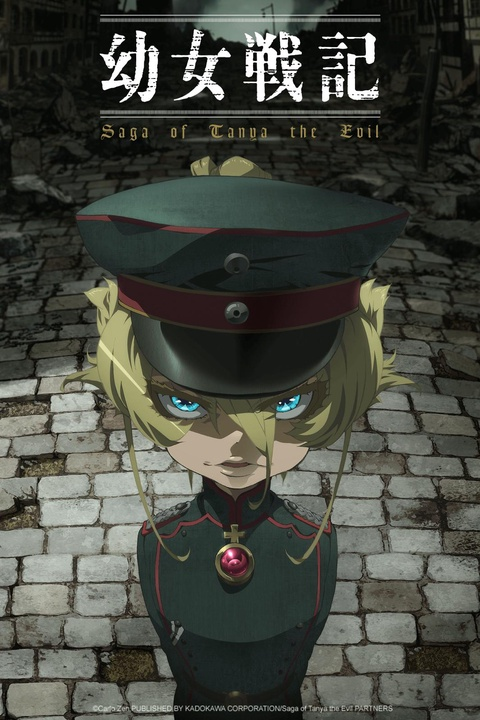
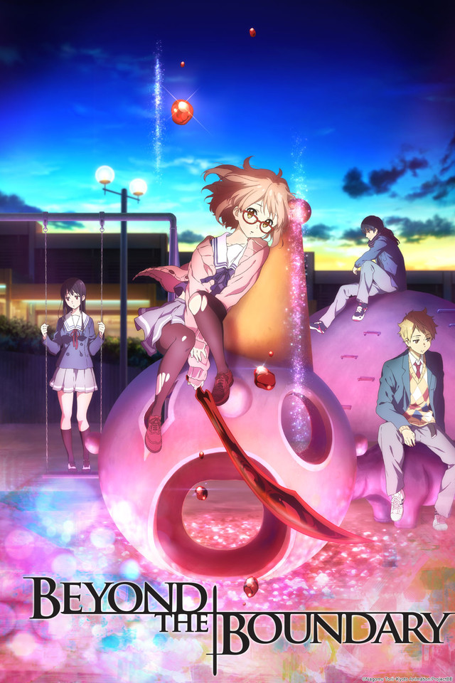
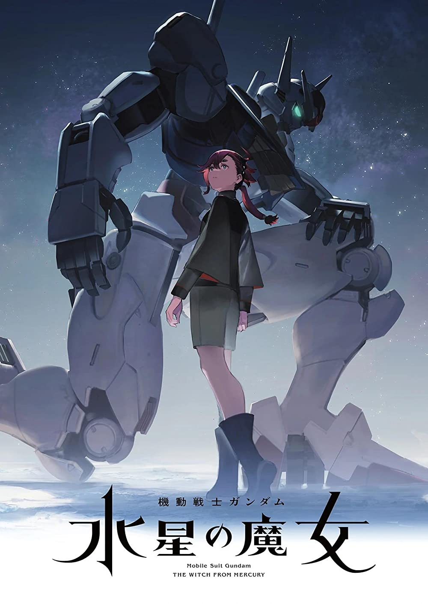

DARLING in the FRANXX
TV (24 eps)
It is June of the year CE 1923. A young girl with blond hair and blue eyes, Tanya Degurechaff, has entered the final curriculum of the Imperial Military Academy and is training at the third patrol line in the northern military district, the Norden Theater, as part of her service to the force. Her training, the first step toward a brilliant career as an aviation mage, should have gone off without a hitch... but things took an unexpected turn.
Source: Crunchyroll
 Demon Slayer: Kimetsu no Yaiba
Demon Slayer: Kimetsu no Yaiba
TV (26 eps)
Bloodthirsty demons lurk in the woods, and nobody dares to venture out at night, save for the demon slayer of legend. Surviving in this harsh world, young Tanjirou takes it upon himself to protect his family–until the day that everything is taken from him in a vicious slaughter. Now, all he has left is his sister, and she’s not even human anymore.
Source: Funimation

Beyond the Boundary
TV (12 eps)
In a world where supernatural beings known as youmu are hunted by Spirit World Warriors, Akihito lives an eventful life. He’s a half-breed from a human mother and a youmu father, and is immortal - a fact that saves his life on a regular basis, for his bespectacled classmate Mirai can’t seem to stop stabbing him in the chest. She’s a Spirit World Warrior with the power to control her blood, which she manifests into a sword; and with low self esteem about her abilities to hunt youmu, Mirai constantly uses Akihito as target practice. In hopes of being left alone, Akihito must now help Mirai gain confidence to take down sinister youmu.
Source: Anime-Planet
 Jujutsu Kaisen
Jujutsu Kaisen
TV (24 eps)
Although Yuji Itadori looks like your average teenager, his immense physical strength is something to behold! Every sports club wants him to join, but Itadori would rather hang out with the school outcasts in the Occult Research Club. One day, the club manages to get their hands on a sealed cursed object. Little do they know the terror they’ll unleash when they break the seal…
Source: Viz

Mobile Suit Gundam: The Witch from Mercury
TV (12 eps)
A.S. (Ad Stella) 122. An era when a multitude of corporations have entered space and built a huge economic system. A lone girl from the remote planet Mercury transfers to the Asticassia School of Technology, run by the Beneritt Group which dominates the mobile suit industry. Her name is Suletta Mercury. With a scarlet light burning in her pure heart, this girl walks step by step through a new world.
Source: Official Site